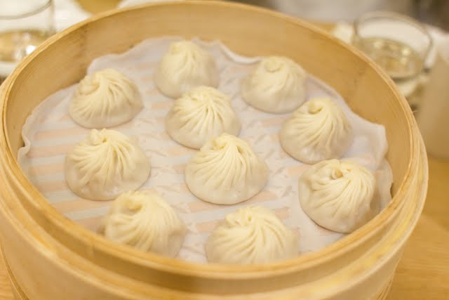

Odin Recipes
Xiao Long Bao

Soup dumplings (called Xiao Long Bao) are quite popular in Taiwan. Thin skinned dumplings are filled with pork and steamed. When they are steamed, they produce a lot of broth, causing a juicy morsel when you bite in.
Ingredients:
The Aspic
- ½ lb pork skin (225g), cut into 1-inch strips
- 1 lb (450g) pork neck bones (you want neck bones that still have meat on them!)
water
- 2 slices ginger
- 1 scallion, cut into 3 pieces
- 1 tablespoon shaoxing wine
The Dough
- 1 cup all-purpose flour (130g)
- 6 tablespoons warm water (90 ml)
The Filling
- 1 pound (450g) ground pork (70% lean 30% fat)
- 2 tablespoons shaoxing wine
- 3/4 teaspoon salt
- 1/2 teaspoon sesame oil
- 3/4 teaspoon sugar
- 3 teaspoons light soy sauce
- 3 tablespoons water
- A pinch of ground white-pepper
- 1 tablespoon minced ginger
- 1 heaping cup of your aspic, diced into ½-inch pieces
Instructions:
The Aspic
The first thing to make is the aspic, or meat gelatin, which will create the soup in the soup dumplings.
- In a small pot, add the pork skin and pork bones and cover with cold water. Bring to a rolling boil, and immediately drain and rinse off the bones and the skin. This gets rid of any impurities.
- Rinse out the pot and put everything back in. Add 4 cups (950 ml) of water along with the ginger, scallion and wine. Bring the pot to a boil and then reduce the heat to low. Cover and simmer for 2 hours.
- After 2 hours, turn off the heat, allow the soup to cool, and strain the liquid into a bowl. As to the leftovers in the pot, you can discard them or go the Chinese route, which would be to drizzle some light soy sauce over everything and start grazing).
- Once the liquid is completely cooled, cover and refrigerate overnight.
The Dough
- In a mixing bowl, add the flour and warm water 1 tablespoon at a time. Work and knead the dough for 15-20 minutes. The dough should be very soft and smooth.
- Cover with a cloth and let it rest for 30 minutes.
The Filling
- Take your ground pork and put it in the food processor. Pulse for 30-60 seconds until the pork resembles paste. In a mixing bowl, add the pork and all the rest of the ingredients except the aspic.
- Whip everything together thoroughly, for about 2 minutes. You want everything to be extremely well combined, and the pork should look like a light, airy paste. Gently fold in the diced aspic, and do not over-mix.
- Cover and transfer the filling to the refrigerator until ready to make the dumplings. If you’re ready now, you can put it in the freezer for 15 minutes to allow it to firm up and make assembling the buns easier.
Assembly
- Lightly dust a clean work surface with flour and roll the dough into a long cylinder/cigar, about an inch in diameter. Cut the dough into small equal pieces weighing about 11 grams each (the dough chunks should be a size resembling that of gnocchi).
- Roll out each piece into a round disc about 3 – 3 ¼ inches diameter. Keep everything under a damp cloth.
- Prepare your bamboo steamer. You can line it with cheese cloth or napa cabbage leaves.
- When all that is prepared, take out the filling. You’ll be making each bun one at a time. Place about 1 tablespoon of filling in the middle of your dumpling skin. Pleat with as many folds as you can muster: 12-18 folds should do it.
- As you fold, you’re constantly using your thumb to push the filling into the resulting little “bag” that you’re creating with the dough. Make sure the top is sealed. If the filling ever gets too wet or hard to handle, put it in the freezer for another 15 minutes and start again.
- Place the buns in the lined steamer basket, about 1 1/2 – 2 inches apart.
- In a metal steamer pot or wok, boil water. If using a wok, put the water at a level so that when you put the bamboo steamer into the wok, the water rises about ½ inch up the bottom of the bamboo base. You never want the water to touch the dumplings inside, though, so make sure not to fill it too high!
- Make sure not to fill it too low either, because if all the water evaporates, you could end up burning your bamboo steamer.
- Once the water is boiling, put the bamboo steamer in the wok or steamer pot, cover with the bamboo steamer lid, and steam over high heat for 8 minutes. Immediately remove the bamboo steamer from the pot and serve.
Home